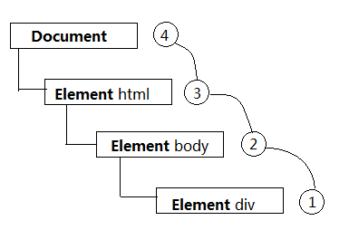
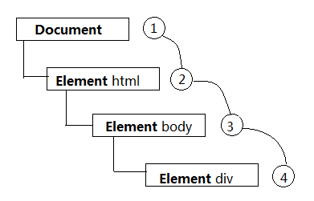

事件流
事件流所描述的就是从页面中接受事件的顺序。
事件冒泡
IE 的事件流叫做事件冒泡（Event Bubbling），即事件开始时由最具体的元素（文档中嵌套层次最深的那个节点）接收，然后逐级向上传播到较为不具体的节点，直到 document 对象。
下图展示了事件冒泡的过程：
事件捕获
Netscape Communicator 团队提出的另一种事件流叫做事件捕获。事件捕获的思想是不太具体的节点应该更早接收到事件，而最具体的节点应该最后接收到事件。事件捕获的用意在于在事件到达预定目标之前就捕获它以同样的 HTML 结构为例，说明事件捕获
DOM 事件流
事件流又称为事件传播，DOM2 级事件规定的事件流包括三个阶段：事件捕获阶段（Capture Phase）、处于目标阶段（Target Phase）和事件冒泡阶段（Bubbling Phase）。
首先发生的是事件捕获，为截获事件提供了机会。 然后是实际的目标接收到事件。 最后一个阶段是冒泡阶段，可以在这个阶段对事件做出响应。

- 当处于目标阶段，没有捕获与冒泡之分，执行顺序会按照
addEventListener的添加顺序决定，现添加先执行。 - 使用
stopPropagation()取消事件传播时，事件不会被传播给下一个节点，但是，同一个节点上的其他监听器还是会执行。如果想要同一层级的监听器也不执行，可以使用stopImmediatePropagation()。 preventDefault()只是阻止默认行为，跟 JavaScript 的事件传播一点关系都没有。- 一旦发起了
preventDefault()，在之后传递下去的事件里面也會有效果。
最佳实践
弹窗点击空白关闭
不实用蒙层实现点击弹窗外空白区域实现关闭弹窗功能。
const modal = document.querySelector('.modal');
document.body.addEventListener('click', e => {
const evt = e || widnow.event;
const target = e.target || e.srcElement;
if (modal == target || modal.contains(target)) {
// 其他操作
} else {
// 隐藏 Modal
}
});